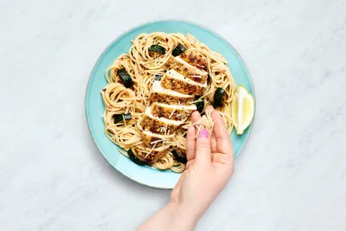
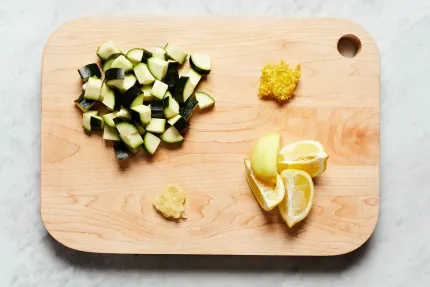
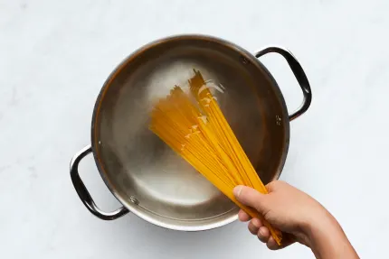
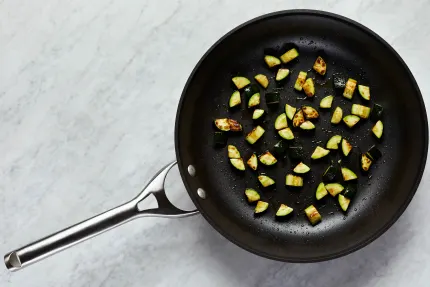
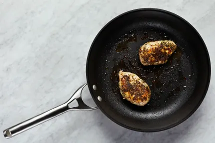
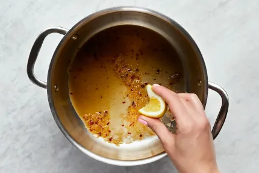

Ingredients
(Serving 2 People)
- 1 Zuchinni
- 1 Garclic Clove
- 1 Lemon
- 6 oz. Spaghetti
- 10 oz Chicken Cutlets
- 1 tbsp Italian Seasoning
- 1 tsp Chili Flakes
- 1 Chicken Stock Concentrate
- 1 1/2 tbsp Sour Cream
- 1/4 cup Parmesan Cheese

-
Bring a large pot of salted water to a boil. Wash and dry produce.
- Trim and quarter zucchini lengthwise; cut crosswise into ½-inch-thick pieces. Peel and mince garlic. Zest and quarter lemon.

- Once water is boiling, add spaghetti to pot. Cook, stirring occasionally, until al dente, 9-11 minutes.
- Reserve 1 cup pasta cooking water, then drain. (Keep empty pot handy for step 5.)

-
While pasta cooks, heat a drizzle of olive oil in a large, preferably nonstick, pan over medium-high heat.
-
Add zucchini; cook, stirring occasionally, until browned and softened, 4-6 minutes. Season with salt and pepper.
-
Turn off heat; transfer to a plate. Wipe out pan.

-
Meanwhile, pat chicken* dry with paper towels and season all over with Italian Seasoning, salt, and pepper.
-
Once zucchini is done, heat a large drizzle of oil in same pan over medium-high heat.
-
Add chicken and cook until browned and cooked through, 3-5 minutes per side.
-
Turn off heat; transfer to a cutting board to rest
-
Once cool enough to handle, slice chicken crosswise.

-
Heat a drizzle of olive oil in pot used for spaghetti over medium-high heat.
-
Add garlic, half the lemon zest, and a pinch of chili flakes. Cook, stirring, until fragrant, 20-30 seconds.
-
Stir in ½ cup reserved pasta cooking water (¾ cup for 4 servings), stock concentrate, and juice from two lemon wedges (four wedges for 4).
- Simmer until thickened, 1-2 minutes. Turn off heat.

-
Add drained spaghetti, zucchini, sour cream, and 1 TBSP butter (2 TBSP for 4 servings) to pot with sauce; toss to coat.
-
Add half the Parmesan and season with salt and pepper.
-
TIP: If needed, stir in more reserved pasta cooking water a splash at a time until spaghetti is coated in a creamy sauce.
-
Divide pasta between bowls. Top with chicken, remaining Parmesan, remaining lemon zest, and a pinch of chili flakes if desired. Serve with any remaining lemon wedges on the side.